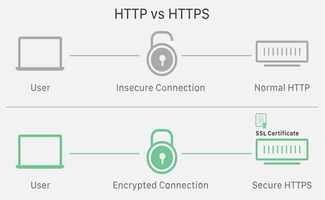
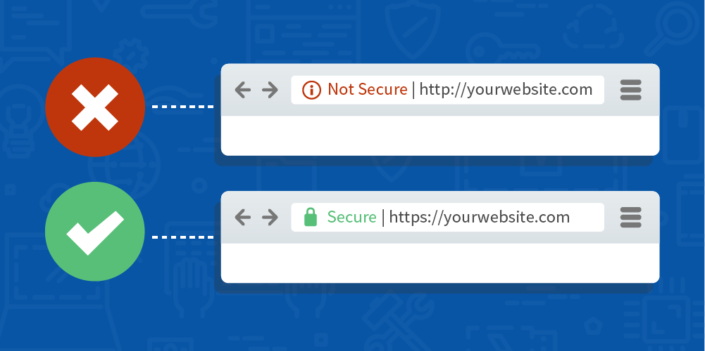

SSL stands for Secure Socket Layer. It helps to keep sensitive information secure. When the data is being transferred between two systems and thus prevents criminals and hackers from tweaking or mishandling the transferred data.Example: When you share your personal details, SSL makes sure that your details do not fall in the wrong hands.TLS stands for Transport Layer Security. It helps to encrypt sensitive and personal information. It is the same as SSL but with more security and encryption. Nowadays the number of hackers who steal our data is rapidly increasing so TLS fulfills the need for SSL in a more enhanced. We can determine by checking the URL if it contains HTTPS. This tells us that the data is transferred securely between the server and users. Moreover secure means that our data is not being misused by hackers or criminals. Encryption means that your data is encoded in such a manner that it cannot be recognized by an unknown user who tries to access our data, which means that a random user cannot access or decrypt the data other than the original user and the server.
HTTP stands for HyperText Transfer Protocol and HTTPS stands for HyperText Transfer Protocol Secure. Both help us to represent our data on the screen, but, HTTPS is more secure and reliable by encrypting data with the newest technology. We can even say HTTPS is the extension of HTTP.Example: There’s a site with no HTTPS URL and it’s a clown of some banking or e-commerce websites where you log in with your bank detail, personal account information, etc. All of our data gets transferred to an unknown user without even realizing it. We assume that we are shopping, transferring money and feel it’s very safe without having an idea of the negative outcomes. Hence, we should always verify the website by HTTPS URL.
An SSL certificate authority provides a digital certificate to the website in return helps us to have a secure connection and keeps our data encrypted. According to my, I want all my personal information to be secured which cannot be misused by another person or a user. For example, personal information is like getting to know your bank account details, e-commerce account details, or any other account login credentials and personal life information, like where I go, the number of family members, a place where I leave, my occupation, etc. are valuable information to me.